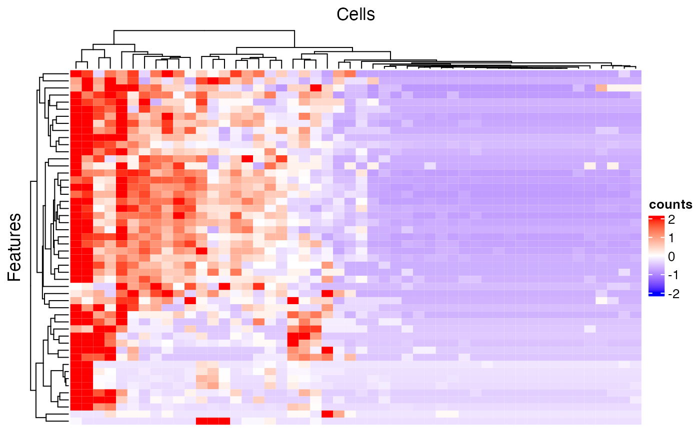
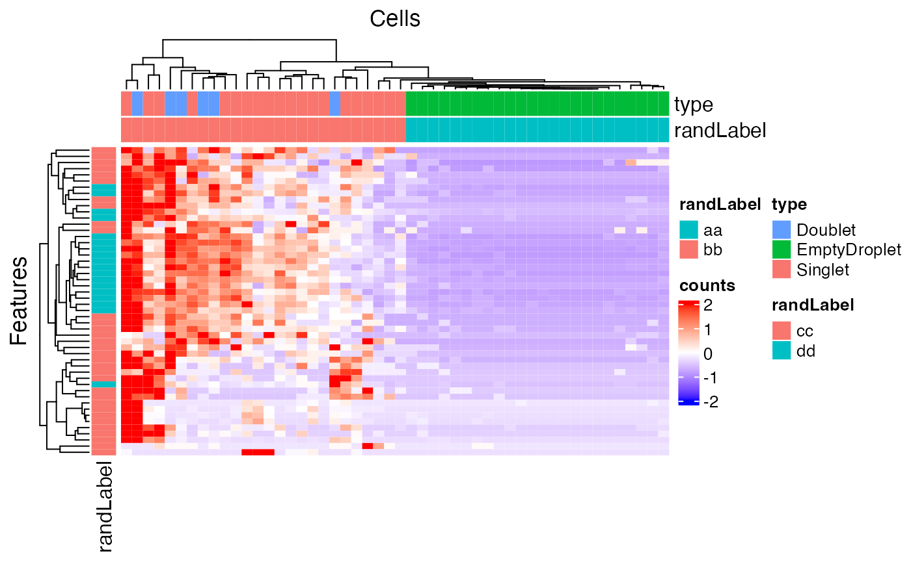

Introduction
SingleCellTK (SCTK) is equipped with the generic heatmap plotting
functionality, which helps visualizing the feature expression matrices,
with flexible methods of annotation and grouping on either cells or
features. Our base function is a wrapper of ComplexHeatmap
[1].
To view detailed instructions on how to use heatmap, please select
‘Interactive Analysis’ for using heatmap in shiny application or
‘Console Analysis’ for using it on R console from the tabs below:
Workflow Guide
Entry of the Panel

The UI for plotting a generic heatmap is constructed with 5 sections: data input, data subsetting, annotation adding, parameter setting, and finally, plotting.
Basic Workflow
1. Data Input

The data used for plotting a heatmap can only be a feature expression
matrix, technically called assay in R language. This will
be set at the selection input “Assay to Plot”.
There is a second selection called “Import from analysis” which is used for the fast setting of plotting a differential expression (DE) analysis or marker detection specific style. The detail of this feature will be introduced later.
2. Data Subsetting

Similar to the condition definition in the DE analysis panel, here SCTK also adopts a data table to do a filtering and select the cells and features, in order to maintain the maximum flexibility. By default, all the cell annotation available will be displayed as shown in the screenshot above, as well as the feature annotation.
Generally, to make a selection, users will first find the annotations which can define the cells or features of interests, apply the filter, and then press “Add all filtered” to finish the selection. When there is no applicable annotation, we also allow manually entering a list of cell/feature identifiers to specify the contents to be plotted.
Filter by Categorical Variables

To make the operation cleaner, user can choose to only display the
annotation classes of interests at the multi-selection input
“Columns to display”. The outcome will look like the
screenshot above. When the annotation of interests is categorical (in
terms of R language, a character or logical
vector or a factor), filters can be applied by selecting
the categories of interest, at the boxes under the variable names.
Filter by Continuous Variables

The screenshots above demonstrates how to filer by limiting a range
to a continuous data (in R, a numeric or
integer vector).
Select by Entering A List

Finally, if there is no applicable annotation to use, SCTK provides a third tab that allows direct pasting a list of unique cell/feature identifiers. As shown above.
The identifiers pasted to the text box should be able to uniquely
identify the cells or features, and they have to be able to be found in
the background information (i.e. the background
SingleCellExperiment (SCE) object). However, they do not
necessarily have to be the default identifiers. That is to say,
identifiers that can be found in existing annotation are also
acceptable. To accomplish this, users only need to select what class of
annotation they intend to use at the selection input “Match
input cell/feature identifiers by”. Note that the option “Row
Names” indicates the default identifier when no annotation is
available.
For example, usually in a “cellRanger” style data, the default feature identifiers would usually be “Ensembl IDs”, while “gene symbols” will be embedded in the feature annotation. When users only have a list of genes symbol, they can directly use this list, and select the annotation for “gene symbol”, instead of going for some other external tools to transfer the “symbols” into “IDs”.
3. Annotation Adding

In this sub-panel, users can attach the annotations to be shown in the heatmap legend, and changes in colors are allowed. As mentioned previously, there are two types of values - categorical and continuous.
Color Settings for Categorical Annotation
For categorical information, the color setting will look like the screenshot above. Each category will be displayed with a color input. Users can click on the color box to change the color for a specific category if needed.
Note that when categorical annotation is wanted but too many categories are detected, SCTK will not display any color selection but set it with default color scheme, in order to avoid a UI “overflow”.
Color Settings for Continuous Annotation

While for a continuous value, users will still be asked if the value is categorical or continuous. The reason is that, technically, sometimes there are annotations generated in a continuous numeric data type but indicating categorical information, such as clusters labeled with integers. If users select “Categorical”, the similar color selections will be displayed as in the previous screenshot (Refer to the previous folded paragraph). If “Continuous” is selected, a different color selection UI will be shown, as the screenshot above. Here users will be asked to set two colors for a color gradient.
4. Other Parameters

This is the last sub-panel for the generic heatmap setting before users can generate a plot.
- Heatmap splitting - multi-selection inputs “Split columns (cell) by” and “Split rows (feature) by”. By splitting the heatmap in row/column, the clustering of rows/columns will be performed in each splitted group separately. The procedure is also called semi-heatmap in some cases.
- Label adding - checkbox inputs “Add cell/feature labels”. The labels added here are text identifiers attached next to each row/column. Not recommanded when there are a large amount of features/cells to plot.
- Dendrogram adding - checkbox inputs “Show dendrograms for”. Adding the dendrogram of cell/feature clustering to the top/left. The dendrograms will also be splitted if the heatmap splitting is also requested.
- Normalization - checkbox input “Z-Score SCale”. Whether to perform z-score normalization to the data matrix to plot.
- Value trimming - numeric sliding input “Trim”. Trim the value in the data matrix to plot to the closer bound of a range if a value is out of the range. The numeric slider UI dynamically changes with the data if normalized.
- Heatmap color setting - “Color Scheme”. User can set the colors of the highest value, the lowest value and the middle value for the heatmap. Meanwhile, some frequently used presets are also provided. s
5. Plot Displaying

After going over all the settings shown in the screenshots of the previous sections, users can confirm to generate a heatmap by clicking on the button “Plot Heatmap”. A heatmap in the screenshot above will be generated at the bottom region of the UI.
Additional Usage
The documentation above is for the general usage of SCTK Heatmap page. While heatmap is an important visualization method for many types of analysis, SCTK allows importing some types analysis results. Currently, DE analysis and marker detection results are supported. Here, we will present an example of importing the DE analysis result.
See Detail

First, users need to go back to the top of the Heatmap panel, and
find “Import from analysis” selection input. On
selecting "Differential Expression", the session will scan
the background data and show a list of the analysis information for
users to choose from. After selecting the analysis of interests, click
“Import”.
The import functionality will automatically fill most of the options afterwards, including making up some temporary DE specific annotations and subset the data accordingly.


Note that the features automatically selected are all of the ones
stored to the result. In other words, this is affected by the parameters
used when running the DE analysis. However, sometimes users might not
want to plot all of them but apply some further filters instead. For
example, using features with the absolute value of Log2FC greater than
1 usually produces cleaner figure, than setting that bound
to 0.25. To apply this filter in the UI, users need to
click on the input box below the column title in the table. If the
column is for categorical information, then just click on the categories
of interests; else if it is numeric, users can either manually drag the
sliders or type a “formula” into the input box. The formula follows the
rule: {low}...{high}, where one of the two bounds can be
omitted for a one-end range. For example if users want to apply a filter
described above for Log2FC values, they need to first click
“Clear selection”, type 1... , click
“Add all filtered”, then type ...-1, and
click “Add all filtered” again.

Other heatmap settings will also be automatically filled for a DE specific heatmap.


To present the usage of plotSCEHeatmap(), we would like
to use a small example provided with SCTK.
“Raw” plotting
The minimum setting for plotSCEHeatmap() is the input
SCE object and the data matrix to plot (default
"logcounts"). In this way, all cells and features will be
presented while no annotation or legend (except the main color scheme)
will be shown.
library(singleCellTK)
data("scExample") # This imports SCE object "sce"
sce## class: SingleCellExperiment
## dim: 200 390
## metadata(0):
## assays(1): counts
## rownames(200): ENSG00000251562 ENSG00000205542 ... ENSG00000204472
## ENSG00000133872
## rowData names(2): feature_ID feature_name
## colnames(390): pbmc_4k_GACCAATTCCTAGAAC-1 pbmc_4k_AAATGCCGTTTCGCTC-1
## ... pbmc_4k_CTGAAGTTCCACTCCA-1 pbmc_4k_CATCGAACAGCCAGAA-1
## colData names(4): cell_barcode column_name sample type
## reducedDimNames(0):
## mainExpName: NULL
## altExpNames(0):
# QC - Remove empty droplets
sce2<-subsetSCECols(sce, colData = c("type != 'EmptyDroplet'"))
# Normalize the counts
sce2<-runNormalization(sce2, useAssay = "counts", outAssayName = "logcounts",
normalizationMethod = "logNormCounts",scale = TRUE)
# plot the data
plotSCEHeatmap(sce2,useAssay = "logcounts",cluster_rows = TRUE, cluster_columns = TRUE)
Subsetting
SCTK allows relatively flexible approaches to select the cells/features to plot.
The basic way to subset the heatmap is to directly use an index
vector that can subset the input SCE object to featureIndex
and cellIndex, including numeric, and
logical vectors, which are widely used, and
character vector containing the row/col names. Of course,
user can directly use a subsetted SCE object as input. First let’s run a
simple clustering workflow to identify clusters and find DE genes for
each cluster. We can subset the heatmap using this list of DE genes

Using Identifiers in rowData/colData
In a more complex situation, where users might only have a set of
identifiers which are not inside the row/col names (i.e. unable to
directly subset the SCE object), we provide another approach. The
subset, in this situation, can be accessed via specifying a vector that
contains the identifiers users have, to featureIndexBy or
cellIndexBy. This specification allows directly giving one
column name of rowData or colData.
list_of_FIDs<-c("ENSG00000251562","ENSG00000205542","ENSG00000177954","ENSG00000166710")
plotSCEHeatmap(inSCE = sce2, useAssay = "logcounts", featureIndexBy = "feature_ID", featureIndex = list_of_FIDs, cluster_rows = TRUE, cluster_columns = TRUE, rowLabel = TRUE)
Adding Annotations
As introduced before, we allow directly using column names of
rowData or colData to attach color bar
annotations. To make use of this functionality, pass a
character vector to rowDataName or
colDataName.
# Creat new annotation for markers
plotSCEHeatmap(inSCE = sce2, useAssay = "logcounts", featureIndex = topMarkers$Gene, colDataName = c( "scranSNN_PCA"),rowLabel = TRUE, cluster_rows = TRUE, cluster_columns = TRUE)
Customized Annotation
Fully customized annotation is also supported, though it can be
complex for users. For the labeling, it is more recommended to insert
the information into rowData or colData and
then make use. For coloring, information should be passed to
featureAnnotationColor or cellAnnotationColor.
The argument must be a list object with names matching the
annotation classes (such as "randLabel" and
"type"); each inner object under a name must be a named
vector, with colors as the values and existing categories as the names.
The working instance looks like this:
Others
1. Grouping/Splitting In some cases, it might be
better to do a “semi-heatmap” (i.e. split the rows/columns first and
cluster them within each group) to visualize some expression pattern,
such as evaluating the differential expression. For this need, use
rowSplitBy or colSplitBy, and the arguments
must be a character vector that is a subset of the
specified annotation.
##
## Attaching package: 'dplyr'## The following object is masked from 'package:Biobase':
##
## combine## The following objects are masked from 'package:GenomicRanges':
##
## intersect, setdiff, union## The following object is masked from 'package:GenomeInfoDb':
##
## intersect## The following objects are masked from 'package:IRanges':
##
## collapse, desc, intersect, setdiff, slice, union## The following objects are masked from 'package:S4Vectors':
##
## first, intersect, rename, setdiff, setequal, union## The following objects are masked from 'package:BiocGenerics':
##
## combine, intersect, setdiff, union## The following object is masked from 'package:matrixStats':
##
## count## The following objects are masked from 'package:stats':
##
## filter, lag## The following objects are masked from 'package:base':
##
## intersect, setdiff, setequal, union
data.frame(rowData(sce2)) %>%
left_join(topMarkers, by = c("feature_name" = "Gene")) %>%
rename("cluster_markers" = "scranSNN_PCA") -> new_row_data
rowData(sce2)$cluster_markers <-new_row_data$cluster_markers
plotSCEHeatmap(inSCE = sce2, useAssay = "logcounts", featureIndex = topMarkers$Gene, colDataName = c("type"), aggregateCol = "scranSNN_PCA", rowGap = grid::unit(2, 'mm'),rowLabel = TRUE, rowDataName = "cluster_markers", rowSplitBy = "cluster_markers")
# Adding a summary
data.frame(colData(sce2)) %>%
mutate(summary_col = sample(5,n(), replace = TRUE)) -> new_col_data
colData(sce2)<-DataFrame(new_col_data)
plotSCEHeatmap(inSCE = sce2, useAssay = "logcounts", featureIndex = topMarkers$Gene, colDataName = c("type"), aggregateCol = "scranSNN_PCA", rowGap = grid::unit(2, 'mm'),rowLabel = TRUE, rowDataName = "cluster_markers", rowSplitBy = "cluster_markers", addCellSummary = "summary_col" )
2. Cell/Feature Labeling Text labels of features or
cells can be added via rowLabel or colLabel.
Use TRUE or FALSE to specify whether to show
the rownames or colnames of the subsetted SCE
object. Additionally, giving a single string of a column name of
rowData or colData can enable the labeling of
the annotation. Furthermore, users can directly throw a character vector
to the parameter, with the same length of either the full SCE object or
the subsetted.
3. Dendrograms The dendrograms for features or cells
can be removed by passing FALSE to rowDend or
colDend.
4. Row/Column titles The row title
("Genes") and column title ("Cells") can be
changed or removed by passing a string or NULL to
rowTitle or colTitle, respectively.
plotSCEHeatmap(inSCE = sce2, useAssay = "logcounts", featureIndex = topMarkers$Gene, rowGap = grid::unit(2, 'mm'),rowLabel = TRUE, rowTitle = "Markers",colTitle = "Clusters", cluster_columns = TRUE, cluster_rows = TRUE)
There are still some parameters not mentioned here, but they are not
frequently used. Please refer to ?plotSCEHeatmap as well as
?ComplexHeatmap::Heatmap.